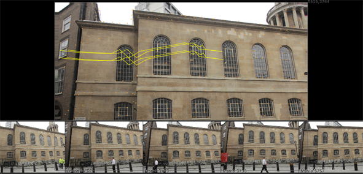
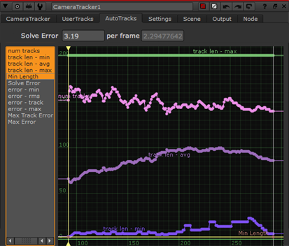
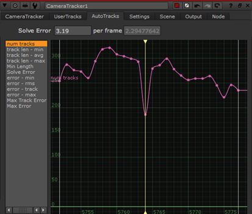

Once tracking is complete, you can review how CameraTracker connected the analyzed frames:
| 1. | Do one of the following: |
• Switch the Thumbnails control above the Viewer to Tracked. CameraTracker displays the frames that are connected to the current frame in the thumbnail gallery at the bottom of the Viewer. This allows you to simply step through the sequence frame-by-frame to evaluate the connections.
• Switch the Thumbnails control above the Viewer to All to have CameraTracker display all frames in the tracked range in the thumbnail gallery. This allows you to hover the cursor over a thumbnail to view its connections to adjacent reference frames highlighted in orange. Disconnected frames are highlighted in red. See Disconnected Frame Sets for more information.
TIP: You can click-and-drag to scroll the gallery left and right, or click a thumbnail to move the playhead to the corresponding reference frame. To adjust the size of the thumbnail gallery, drag the top of the gallery up and down.
| 2. | To display track information, hover over a feature or marquee select several features. |
NOTE: If you make multiple selections, you won't see the track lengths in frames, only the tracks themselves.

Detailed tracking information is displayed in curves in the properties panel on the AutoTracks tab. You can select all track curves at once or get a more detailed view of a single curve, such as num tracks.
TIP: Pressing F with focus on a curve maximizes the selected curve in the space available.
|
 |
 |
| Selecting all track curves. | Framing a single curve. |
Curves can indicate areas of the sequence where tracking encountered problems. For example, the number of tracks curve on the right shows a significant dip on the current frame, as indicated by the playhead position.
In this instance, you could try adjusting the Number of Features or Minimum Length and retracking. See Troubleshooting Still Tracks
|
|